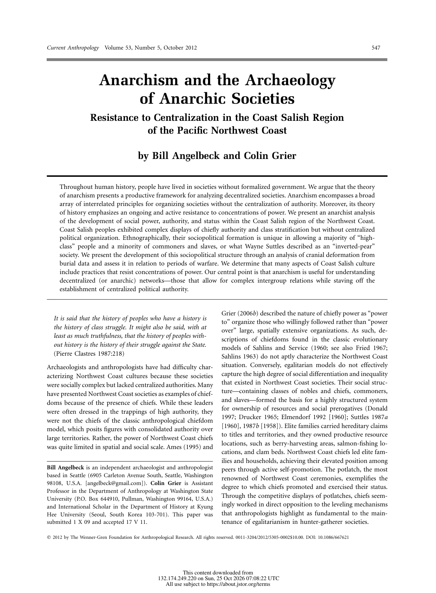
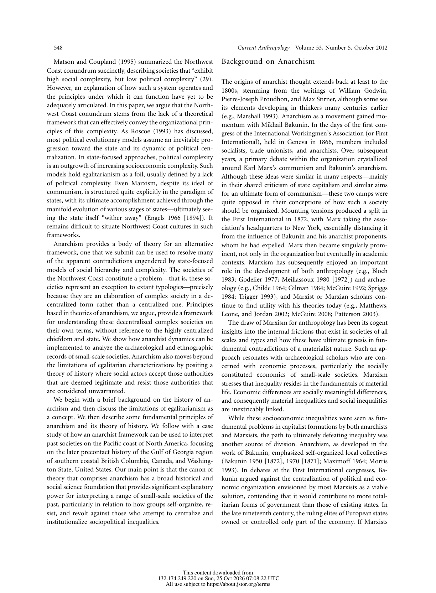

<!DOCTYPE html>
<html lang="en">
<head>
  <meta charset="UTF-8">
  <meta name="viewport" content="width=device-width, initial-scale=1.0">
  <meta name="description" content="Anarchism and the Archaeology of Anarchic Societies: Resistance to Centralization in the Coast Salish Region of the Pacific Northwest Coast. Scholarly Article A6.1 for Unit 2: Second Wave Civilizations.">
  <meta name="theme-color" content="#7A3B23">
  <title>Scholarly Article A6.1 | Anarchism and the Archaeology of Anarchic Societies: Resistance to Centralization in the Coast Salish Region of the Pacific Northwest Coast</title>
  <link rel="canonical" href="https://www.thegarzaarchive.org/AP-World-History/Unit_2/Sources/Scholarly_Articles/A6.01_Anarchism_Archaeology_Anarchic_Societies_Resistance.html">
  <link rel="preconnect" href="https://fonts.googleapis.com">
  <link rel="preconnect" href="https://fonts.gstatic.com" crossorigin>
  <link href="https://fonts.googleapis.com/css2?family=Cinzel:wght@500;600;700&amp;family=Cormorant+Garamond:ital,wght@0,500;0,600;0,700;1,500;1,600&amp;family=Inter:wght@500;600;700;800&amp;display=swap" rel="stylesheet">
  <style>
    :root {
      --forest: #7A3B23;
      --forest-mid: #B0562F;
      --coral: #7C9473;
      --coral-light: #B7C7AE;
      --cream: #F5F1E9;
      --paper: #FCFBF8;
      --mint: #F1F4EF;
      --sage: #EBD5CB;
      --ink: #432013;
      --muted: #7D5A4D;
      --shadow: 0 22px 55px rgba(73, 35, 21, .14);
      --heading: 'Cinzel', Georgia, serif;
      --body: 'Cormorant Garamond', Georgia, serif;
      --ui: Inter, Arial, sans-serif;
      --coral-text: #A5512C;
    }

    * { box-sizing: border-box; }
    html { scroll-behavior: smooth; }
    body {
      margin: 0;
      min-width: 320px;
      background: var(--cream);
      color: var(--ink);
      font-family: var(--body);
      font-size: 19px;
      line-height: 1.65;
    }
    body::before {
      content: '';
      position: fixed;
      inset: 0;
      z-index: -1;
      background:
        radial-gradient(circle at 94% 4%, rgba(124, 148, 115, .12), transparent 25rem),
        linear-gradient(145deg, rgba(255,255,255,.55), transparent 48%);
      pointer-events: none;
    }
    a { color: inherit; }
    :focus-visible { outline: 3px solid var(--coral-light); outline-offset: 3px; }
    .skip-link {
      position: fixed;
      top: -5rem;
      left: 1rem;
      z-index: 1000;
      padding: .65rem 1rem;
      background: var(--paper);
      color: var(--forest);
      font: 700 .75rem var(--ui);
    }
    .skip-link:focus { top: 1rem; }

    .archive-bar {
      position: sticky;
      top: 0;
      z-index: 100;
      color: var(--paper);
      background: rgba(122, 59, 35, .98);
      border-bottom: 4px solid var(--coral);
      box-shadow: 0 4px 18px rgba(73, 35, 21, .18);
    }
    .archive-bar__inner {
      width: min(1120px, calc(100% - 2rem));
      min-height: 64px;
      margin: 0 auto;
      display: flex;
      align-items: center;
      justify-content: space-between;
      gap: 1.5rem;
    }
    .archive-link {
      display: inline-flex;
      align-items: center;
      gap: .7rem;
      color: var(--paper);
      font: 700 .72rem var(--ui);
      letter-spacing: .12em;
      text-decoration: none;
      text-transform: uppercase;
    }
    .archive-link span { color: var(--coral-light); font-size: 1.1rem; }
    .archive-link:hover { color: var(--coral-light); }
    .archive-meta {
      color: var(--sage);
      font: 700 .68rem var(--ui);
      letter-spacing: .12em;
      text-transform: uppercase;
    }
    .reading-progress {
      position: absolute;
      left: 0;
      bottom: -4px;
      width: 0;
      height: 4px;
      background: var(--coral-light);
      transform-origin: left center;
    }

    .document-shell {
      position: relative;
      width: min(940px, calc(100% - 2rem));
      margin: clamp(1.5rem, 4vw, 3.5rem) auto 4rem;
      overflow: hidden;
      background: var(--paper);
      border: 1px solid var(--sage);
      border-top: 7px solid var(--coral);
      box-shadow: var(--shadow);
    }
    .document-shell::before {
      content: attr(data-code);
      position: absolute;
      top: 2rem;
      right: 1.5rem;
      color: rgba(176, 86, 47, .055);
      font: 700 clamp(5rem, 15vw, 10rem)/.8 var(--heading);
      pointer-events: none;
    }
    .legacy-source {
      width: 100% !important;
      max-width: none !important;
      margin: 0 !important;
      background: transparent !important;
      border-collapse: collapse;
    }
    .source-content {
      position: relative;
      padding: clamp(2.25rem, 7vw, 5rem) !important;
    }
    .source-kicker {
      position: relative;
      margin: 0 0 1rem !important;
      color: var(--coral-text) !important;
      font: 800 .7rem var(--ui) !important;
      letter-spacing: .18em !important;
    }
    .source-title {
      position: relative;
      max-width: 760px;
      margin: 0 0 1rem !important;
      color: var(--forest) !important;
      font: 600 clamp(2.35rem, 6vw, 4.45rem)/1.04 var(--heading) !important;
      letter-spacing: -.025em;
      text-wrap: balance;
    }
    .source-byline {
      position: relative;
      max-width: 720px;
      margin: 0 0 2.1rem !important;
      color: var(--forest-mid) !important;
      font: 600 clamp(1rem, 2vw, 1.15rem)/1.55 var(--body) !important;
      font-style: italic !important;
    }
    .title-rule {
      margin: 0 0 2rem !important;
    }
    .title-rule td { border-top: 1px solid var(--coral) !important; }

    .context-grid {
      margin: 0 0 3rem !important;
      overflow: hidden;
      background: var(--mint) !important;
      border: 1px solid var(--sage);
      border-left: 5px solid var(--coral);
    }
    .context-grid td:first-child {
      width: 23% !important;
      padding: 1rem 1rem .75rem 1.2rem !important;
      color: var(--coral-text) !important;
      font: 800 .65rem var(--ui) !important;
      letter-spacing: .14em !important;
    }
    .context-grid td:last-child {
      padding: 1rem 1.25rem .75rem .75rem !important;
      color: var(--ink) !important;
      font: 600 .86rem/1.65 var(--ui) !important;
    }
    .context-grid tr + tr td { border-top: 1px solid var(--sage); }

    .section-heading {
      display: block !important;
      width: fit-content;
      margin: 3.6rem 0 1.4rem !important;
      padding: .45rem 0 .55rem !important;
      color: var(--forest) !important;
      border-top: 4px solid var(--coral);
      border-bottom: 1px solid var(--sage) !important;
      font: 700 clamp(1rem, 2vw, 1.25rem) var(--heading) !important;
      letter-spacing: .04em;
    }
    .section-spacer { height: 0 !important; }
    .citation-label {
      max-width: 67ch;
      margin: 1.3rem auto .4rem !important;
      color: var(--coral-text) !important;
      font: 800 .7rem var(--ui) !important;
      letter-spacing: .08em;
      text-transform: uppercase;
    }
    .document-subheading {
      max-width: 67ch;
      margin: 1.8rem auto .65rem !important;
      color: var(--forest-mid) !important;
      font: 700 .84rem/1.5 var(--ui) !important;
      letter-spacing: .035em;
    }
    .legacy-source p {
      max-width: 67ch;
      margin: 0 auto 1.05em !important;
      color: var(--ink) !important;
      font: 500 clamp(1.08rem, 1.8vw, 1.22rem)/1.78 var(--body) !important;
    }
    .legacy-source p a {
      color: var(--forest-mid) !important;
      text-decoration-color: var(--coral-light) !important;
      text-underline-offset: .18em;
      word-break: break-word !important;
    }
    .legacy-source p a:hover { color: var(--coral-text) !important; }

    .editorial-note {
      max-width: 67ch;
      margin: 1.4rem auto 2.5rem !important;
      background: var(--mint) !important;
      border: 1px solid var(--sage);
    }
    .editorial-note td {
      padding: 1rem 1.2rem !important;
      color: var(--forest-mid) !important;
      border-left: 4px solid var(--coral) !important;
      font: 600 .79rem/1.65 var(--ui) !important;
    }
    .source-media {
      max-width: 67ch;
      margin: 1.25rem auto 2.5rem !important;
      background: var(--mint) !important;
      border: 1px solid var(--sage);
    }
    .source-media td { padding: 1rem !important; }
    .source-media img {
      display: block;
      width: auto !important;
      max-width: 100% !important;
      height: auto !important;
      margin: 0 auto;
    }
    .source-media td[style*="font-family"] {
      color: var(--muted) !important;
      font: 600 .72rem/1.55 var(--ui) !important;
    }
    .source-footer { padding: 0 clamp(2.25rem, 7vw, 5rem) 2rem !important; }
    .source-imprint { margin-top: 1rem !important; }
    .source-imprint td {
      padding-top: 1rem !important;
      color: var(--muted) !important;
      border-top: 1px solid var(--sage) !important;
      font: 700 .63rem var(--ui) !important;
      letter-spacing: .12em !important;
    }
    .document-actions {
      width: min(940px, calc(100% - 2rem));
      margin: -2rem auto 4rem;
      display: flex;
      justify-content: center;
    }
    .document-actions a {
      display: inline-flex;
      align-items: center;
      gap: .65rem;
      padding: .8rem 1.1rem;
      color: var(--forest);
      border: 1px solid var(--sage);
      background: var(--paper);
      font: 800 .68rem var(--ui);
      letter-spacing: .12em;
      text-decoration: none;
      text-transform: uppercase;
    }
    .document-actions a:hover { border-color: var(--coral); color: var(--coral-text); }

    @media (max-width: 680px) {
      .archive-bar__inner { min-height: 58px; }
      .archive-meta { display: none; }
      .document-shell { width: calc(100% - 1rem); margin-top: .75rem; }
      .source-content { padding: 2rem 1.25rem !important; }
      .document-shell::before { top: 1.2rem; right: .35rem; }
      .source-title { font-size: clamp(2rem, 10vw, 2.85rem) !important; }
      .context-grid tr, .context-grid td { display: block; width: 100% !important; }
      .context-grid td:first-child { padding-bottom: .25rem !important; }
      .context-grid td:last-child { padding: 0 1.2rem 1rem !important; }
      .context-grid tr + tr td:last-child { border-top: 0; }
      .source-footer { padding: 0 1.25rem 1.5rem !important; }
      .document-actions { margin-top: -2.4rem; }
    }

    @media print {
      @page { margin: .65in; }
      body { background: #fff; font-size: 11pt; }
      body::before, .archive-bar, .skip-link, .document-actions, .document-shell::before { display: none !important; }
      .document-shell { width: 100%; margin: 0; border: 0; box-shadow: none; }
      .source-content { padding: 0 !important; }
      .legacy-source p { max-width: none; font-size: 11pt !important; line-height: 1.5 !important; }
      .context-grid, .editorial-note { break-inside: avoid; }
      .source-footer { padding: 1rem 0 0 !important; }
    }

    @media (prefers-reduced-motion: reduce) {
      html { scroll-behavior: auto; }
    }

  
    .source-table { max-width: 67ch; margin: 0 auto 1.05em; border-collapse: collapse; font: 500 1.1rem/1.6 var(--body); color: var(--ink); }
    .source-table td { padding: .2rem .9rem .2rem 0; border-bottom: 1px dotted var(--sage); }
    .source-table td:last-child { text-align: right; }
    .legacy-source blockquote {
      max-width: 62ch; margin: 0 auto 1.2em !important; padding: .9rem 1.2rem;
      background: var(--mint); border-left: 4px solid var(--coral);
    }
    .legacy-source blockquote p { max-width: none; margin: 0 0 .6em !important; }
    .legacy-source blockquote p:last-child { margin-bottom: 0 !important; }
    .page-text { max-width: 67ch; margin: -1rem auto 2.2rem; border: 1px solid var(--sage); background: var(--paper); }
    .page-text summary { cursor: pointer; padding: .7rem 1rem; color: var(--forest-mid); font: 700 .72rem var(--ui); letter-spacing: .06em; text-transform: uppercase; }
    .page-text[open] summary { border-bottom: 1px solid var(--sage); }
    .page-text p { margin: .9rem 1.1rem !important; font: 500 1rem/1.6 var(--body) !important; white-space: pre-line; }
    .legacy-source sup { font: 700 .68em var(--ui); line-height: 0; }
  </style>
</head>
<body id="top">
  <a class="skip-link" href="#document">Skip to document</a>
  <nav class="archive-bar" aria-label="Scholarly Article navigation">
    <div class="archive-bar__inner">
      <a class="archive-link" href="https://www.thegarzaarchive.org/AP-World-History/Unit_2/Sources/Scholarly_Articles/"><span aria-hidden="true">←</span> Scholarly Article Archive</a>
      <div class="archive-meta">Unit 2 · Chapter 6 · A6.1</div>
    </div>
    <div class="reading-progress" id="reading-progress" aria-hidden="true"></div>
  </nav>
  <main class="document-shell" id="document" data-code="A6.1">
    <article aria-labelledby="source-title">
<table role="presentation" width="100%" cellpadding="0" cellspacing="0" border="0" style="background-color:#F5F1E9; max-width:820px; margin:0 auto;" class="legacy-source">
  <tr><td style="padding:32px 36px 20px 36px;" class="source-content">
<div style="font-family:Arial, Helvetica, sans-serif; color:#A5512C; font-size:13px; font-weight:700; letter-spacing:0.5px; text-transform:uppercase; margin-bottom:8px;" class="source-kicker">Scholarly Article A6.1</div>
<div style="font-family:Georgia, 'Times New Roman', serif; color:#7A3B23; font-size:30px; font-weight:700; line-height:1.2; margin-bottom:8px;" class="source-title" id="source-title" role="heading" aria-level="1">Anarchism and the Archaeology of Anarchic Societies: Resistance to Centralization in the Coast Salish Region of the Pacific Northwest Coast</div>
<div style="font-family:Arial, Helvetica, sans-serif; color:#A5512C; font-size:14px; font-weight:700; line-height:1.5; margin-bottom:16px;" class="source-byline">Bill Angelbeck and Colin Grier</div>
<table role="presentation" width="100%" cellpadding="0" cellspacing="0" border="0" style="margin-bottom:20px;" class="title-rule"><tr><td style="border-top:4px solid #7C9473; font-size:1px; line-height:1px;">&nbsp;</td></tr></table>
<table role="presentation" width="100%" cellpadding="0" cellspacing="0" border="0" style="background-color:#B7C7AE; border-collapse:collapse; margin-bottom:26px;" class="context-grid">
  <tr>
    <td valign="top" style="width:22%; padding:12px 12px 8px 14px; font-family:Arial, Helvetica, sans-serif; color:#7A3B23; font-size:12px; font-weight:700; letter-spacing:1px; text-transform:uppercase;">ARTICLE</td>
    <td valign="top" style="padding:12px 14px 8px 12px; font-family:Arial, Helvetica, sans-serif; color:#7A3B23; font-size:13.5px; line-height:1.55;">Anarchism and the Archaeology of Anarchic Societies: Resistance to Centralization in the Coast Salish Region of the Pacific Northwest Coast</td>
  </tr>
  <tr>
    <td valign="top" style="width:22%; padding:8px 12px 8px 14px; font-family:Arial, Helvetica, sans-serif; color:#7A3B23; font-size:12px; font-weight:700; letter-spacing:1px; text-transform:uppercase;">JOURNAL</td>
    <td valign="top" style="padding:8px 14px 8px 12px; font-family:Arial, Helvetica, sans-serif; color:#7A3B23; font-size:13.5px; line-height:1.55;"><em>Current Anthropology</em> 53, no. 5 (2012)</td>
  </tr>
  <tr>
    <td valign="top" style="width:22%; padding:8px 12px 8px 14px; font-family:Arial, Helvetica, sans-serif; color:#7A3B23; font-size:12px; font-weight:700; letter-spacing:1px; text-transform:uppercase;">EXCERPT</td>
    <td valign="top" style="padding:8px 14px 8px 12px; font-family:Arial, Helvetica, sans-serif; color:#7A3B23; font-size:13.5px; line-height:1.55;">Original journal pages 547–548</td>
  </tr>
  <tr>
    <td valign="top" style="width:22%; padding:8px 12px 8px 14px; font-family:Arial, Helvetica, sans-serif; color:#7A3B23; font-size:12px; font-weight:700; letter-spacing:1px; text-transform:uppercase;">JSTOR</td>
    <td valign="top" style="padding:8px 14px 8px 12px; font-family:Arial, Helvetica, sans-serif; color:#7A3B23; font-size:13.5px; line-height:1.55;"><a href="https://www.jstor.org/stable/10.1086/667621">https://www.jstor.org/stable/10.1086/667621</a></td>
  </tr>
  <tr>
    <td valign="top" style="width:22%; padding:8px 12px 8px 14px; font-family:Arial, Helvetica, sans-serif; color:#7A3B23; font-size:12px; font-weight:700; letter-spacing:1px; text-transform:uppercase;">ESSAY PROMPTS</td>
    <td valign="top" style="padding:8px 14px 8px 12px; font-family:Arial, Helvetica, sans-serif; color:#7A3B23; font-size:13.5px; line-height:1.55;">6.2</td>
  </tr>
  <tr>
    <td valign="top" style="width:22%; padding:8px 12px 12px 14px; font-family:Arial, Helvetica, sans-serif; color:#7A3B23; font-size:12px; font-weight:700; letter-spacing:1px; text-transform:uppercase;">ARGUMENT ROLES</td>
    <td valign="top" style="padding:8px 14px 12px 12px; font-family:Arial, Helvetica, sans-serif; color:#7A3B23; font-size:13.5px; line-height:1.55;">6.2.3 Supports; 6.2.2 Supports</td>
  </tr>
</table>
<div style="display:inline-block; font-family:Arial, Helvetica, sans-serif; color:#A5512C; font-size:17px; font-weight:700; border-bottom:2px solid #7C9473; padding-bottom:4px; margin:6px 0 14px 0;" class="section-heading" role="heading" aria-level="2">Selection Overview</div>
<p style="font-family:Georgia, 'Times New Roman', serif; color:#7A3B23; font-size:15px; line-height:1.7; margin:0 0 14px 0; ">Angelbeck and Grier argue that anarchist theory explains societies like the Coast Salish of the Pacific Northwest, which had chiefs, nobles, commoners, and slaves but no centralized political authority. Using cranial deformation in burials and the timing of warfare over two millennia, they show commoners winning elite status and rivals breaking up concentrations of wealth, and conclude that many Coast Salish practices "resist concentrations of power," producing a society with inequality but "inherent structural resistance to centralization."</p>
<div style="display:inline-block; font-family:Arial, Helvetica, sans-serif; color:#A5512C; font-size:17px; font-weight:700; border-bottom:2px solid #7C9473; padding-bottom:4px; margin:6px 0 14px 0;" class="section-heading" role="heading" aria-level="2">Excerpt Format</div>
<p style="font-family:Georgia, 'Times New Roman', serif; color:#7A3B23; font-size:15px; line-height:1.7; margin:0 0 14px 0; ">The next two pages are exact facsimiles from the supplied article PDF. Original pagination and the author's note system are preserved.</p>
<div style="display:inline-block; font-family:Arial, Helvetica, sans-serif; color:#A5512C; font-size:17px; font-weight:700; border-bottom:2px solid #7C9473; padding-bottom:4px; margin:6px 0 14px 0;" class="section-heading" role="heading" aria-level="2">Facsimile Excerpt</div>
<table role="presentation" width="100%" cellpadding="0" cellspacing="0" border="0" style="margin:6px 0 24px 0;" class="source-media"><tr>
  <td style="text-align:center; padding:14px; background-color:#FFFFFF; border:1px solid #B7C7AE;">
    
    <div style="font-family:Arial, Helvetica, sans-serif; color:#7A3B23; font-size:12.5px; line-height:1.55; margin-top:10px; text-align:left;">Original journal page 547.</div>
  </td>
</tr></table>
<details class="page-text"><summary>Text of this page (original journal page 547)</summary>
<p>Current Anthropology
Volume 53, Number 5, October 2012
547
 2012 by The Wenner-Gren Foundation for Anthropological Research. All rights reserved. 0011-3204/2012/5305-0002$10.00. DOI: 10.1086/667621
Anarchism and the Archaeology
of Anarchic Societies
Resistance to Centralization in the Coast Salish Region
of the Pacific Northwest Coast
by Bill Angelbeck and Colin Grier
Throughout human history, people have lived in societies without formalized government. We argue that the theory
of anarchism presents a productive framework for analyzing decentralized societies. Anarchism encompasses a broad
array of interrelated principles for organizing societies without the centralization of authority. Moreover, its theory
of history emphasizes an ongoing and active resistance to concentrations of power. We present an anarchist analysis
of the development of social power, authority, and status within the Coast Salish region of the Northwest Coast.
Coast Salish peoples exhibited complex displays of chiefly authority and class stratification but without centralized
political organization. Ethnographically, their sociopolitical formation is unique in allowing a majority of “high-
class” people and a minority of commoners and slaves, or what Wayne Suttles described as an “inverted-pear”
society. We present the development of this sociopolitical structure through an analysis of cranial deformation from
burial data and assess it in relation to periods of warfare. We determine that many aspects of Coast Salish culture
include practices that resist concentrations of power. Our central point is that anarchism is useful for understanding
decentralized (or anarchic) networks—those that allow for complex intergroup relations while staving off the
establishment of centralized political authority.
It is said that the history of peoples who have a history is
the history of class struggle. It might also be said, with at
least as much truthfulness, that the history of peoples with-
out history is the history of their struggle against the State.
(Pierre Clastres 1987:218)
Archaeologists and anthropologists have had difficulty char-
acterizing Northwest Coast cultures because these societies
were socially complex but lacked centralized authorities. Many
have presented Northwest Coast societies as examples of chief-
doms because of the presence of chiefs. While these leaders
were often dressed in the trappings of high authority, they
were not the chiefs of the classic anthropological chiefdom
model, which posits figures with consolidated authority over
large territories. Rather, the power of Northwest Coast chiefs
was quite limited in spatial and social scale. Ames (1995) and
Bill Angelbeck is an independent archaeologist and anthropologist
based in Seattle (6905 Carleton Avenue South, Seattle, Washington
98108, U.S.A. [angelbeck@gmail.com]). Colin Grier is Assistant
Professor in the Department of Anthropology at Washington State
University (P.O. Box 644910, Pullman, Washington 99164, U.S.A.)
and International Scholar in the Department of History at Kyung
Hee University (Seoul, South Korea 103-701). This paper was
submitted 1 X 09 and accepted 17 V 11.
Grier (2006b) described the nature of chiefly power as “power
to” organize those who willingly followed rather than “power
over” large, spatially extensive organizations. As such, de-
scriptions of chiefdoms found in the classic evolutionary
models of Sahlins and Service (1960; see also Fried 1967;
Sahlins 1963) do not aptly characterize the Northwest Coast
situation. Conversely, egalitarian models do not effectively
capture the high degree of social differentiation and inequality
that existed in Northwest Coast societies. Their social struc-
ture—containing classes of nobles and chiefs, commoners,
and slaves—formed the basis for a highly structured system
for ownership of resources and social prerogatives (Donald
1997; Drucker 1965; Elmendorf 1992 [1960]; Suttles 1987a
[1960], 1987b [1958]). Elite families carried hereditary claims
to titles and territories, and they owned productive resource
locations, such as berry-harvesting areas, salmon-fishing lo-
cations, and clam beds. Northwest Coast chiefs led elite fam-
ilies and households, achieving their elevated position among
peers through active self-promotion. The potlatch, the most
renowned of Northwest Coast ceremonies, exemplifies the
degree to which chiefs promoted and exercised their status.
Through the competitive displays of potlatches, chiefs seem-
ingly worked in direct opposition to the leveling mechanisms
that anthropologists highlight as fundamental to the main-
tenance of egalitarianism in hunter-gatherer societies.</p></details>
<table role="presentation" width="100%" cellpadding="0" cellspacing="0" border="0" style="margin:6px 0 24px 0;" class="source-media"><tr>
  <td style="text-align:center; padding:14px; background-color:#FFFFFF; border:1px solid #B7C7AE;">
    
    <div style="font-family:Arial, Helvetica, sans-serif; color:#7A3B23; font-size:12.5px; line-height:1.55; margin-top:10px; text-align:left;">Original journal page 548.</div>
  </td>
</tr></table>
<details class="page-text"><summary>Text of this page (original journal page 548)</summary>
<p>548
Current Anthropology
Volume 53, Number 5, October 2012
Matson and Coupland (1995) summarized the Northwest
Coast conundrum succinctly, describing societies that “exhibit
high social complexity, but low political complexity” (29).
However, an explanation of how such a system operates and
the principles under which it can function have yet to be
adequately articulated. In this paper, we argue that the North-
west Coast conundrum stems from the lack of a theoretical
framework that can effectively convey the organizational prin-
ciples of this complexity. As Roscoe (1993) has discussed,
most political evolutionary models assume an inevitable pro-
gression toward the state and its dynamic of political cen-
tralization. In state-focused approaches, political complexity
is an outgrowth of increasing socioeconomic complexity. Such
models hold egalitarianism as a foil, usually defined by a lack
of political complexity. Even Marxism, despite its ideal of
communism, is structured quite explicitly in the paradigm of
states, with its ultimate accomplishment achieved through the
manifold evolution of various stages of states—ultimately see-
ing the state itself “wither away” (Engels 1966 [1894]). It
remains difficult to situate Northwest Coast cultures in such
frameworks.
Anarchism provides a body of theory for an alternative
framework, one that we submit can be used to resolve many
of the apparent contradictions engendered by state-focused
models of social hierarchy and complexity. The societies of
the Northwest Coast constitute a problem—that is, these so-
cieties represent an exception to extant typologies—precisely
because they are an elaboration of complex society in a de-
centralized form rather than a centralized one. Principles
based in theories of anarchism, we argue, provide a framework
for understanding these decentralized complex societies on
their own terms, without reference to the highly centralized
chiefdom and state. We show how anarchist dynamics can be
implemented to analyze the archaeological and ethnographic
records of small-scale societies. Anarchism also moves beyond
the limitations of egalitarian characterizations by positing a
theory of history where social actors accept those authorities
that are deemed legitimate and resist those authorities that
are considered unwarranted.
We begin with a brief background on the history of an-
archism and then discuss the limitations of egalitarianism as
a concept. We then describe some fundamental principles of
anarchism and its theory of history. We follow with a case
study of how an anarchist framework can be used to interpret
past societies on the Pacific coast of North America, focusing
on the later precontact history of the Gulf of Georgia region
of southern coastal British Columbia, Canada, and Washing-
ton State, United States. Our main point is that the canon of
theory that comprises anarchism has a broad historical and
social science foundation that provides significant explanatory
power for interpreting a range of small-scale societies of the
past, particularly in relation to how groups self-organize, re-
sist, and revolt against those who attempt to centralize and
institutionalize sociopolitical inequalities.
Background on Anarchism
The origins of anarchist thought extends back at least to the
1800s, stemming from the writings of William Godwin,
Pierre-Joseph Proudhon, and Max Stirner, although some see
its elements developing in thinkers many centuries earlier
(e.g., Marshall 1993). Anarchism as a movement gained mo-
mentum with Mikhail Bakunin. In the days of the first con-
gress of the International Workingmen’s Association (or First
International), held in Geneva in 1866, members included
socialists, trade unionists, and anarchists. Over subsequent
years, a primary debate within the organization crystallized
around Karl Marx’s communism and Bakunin’s anarchism.
Although these ideas were similar in many respects—mainly
in their shared criticism of state capitalism and similar aims
for an ultimate form of communism—these two camps were
quite opposed in their conceptions of how such a society
should be organized. Mounting tensions produced a split in
the First International in 1872, with Marx taking the asso-
ciation’s headquarters to New York, essentially distancing it
from the influence of Bakunin and his anarchist proponents,
whom he had expelled. Marx then became singularly prom-
inent, not only in the organization but eventually in academic
contexts. Marxism has subsequently enjoyed an important
role in the development of both anthropology (e.g., Bloch
1983; Godelier 1977; Meillassoux 1980 [1972]) and archae-
ology (e.g., Childe 1964; Gilman 1984; McGuire 1992; Spriggs
1984; Trigger 1993), and Marxist or Marxian scholars con-
tinue to find utility with his theories today (e.g., Matthews,
Leone, and Jordan 2002; McGuire 2008; Patterson 2003).
The draw of Marxism for anthropology has been its cogent
insights into the internal frictions that exist in societies of all
scales and types and how these have ultimate genesis in fun-
damental contradictions of a materialist nature. Such an ap-
proach resonates with archaeological scholars who are con-
cerned with economic processes, particularly the socially
constituted economics of small-scale societies. Marxism
stresses that inequality resides in the fundamentals of material
life. Economic differences are socially meaningful differences,
and consequently material inequalities and social inequalities
are inextricably linked.
While these socioeconomic inequalities were seen as fun-
damental problems in capitalist formations by both anarchists
and Marxists, the path to ultimately defeating inequality was
another source of division. Anarchism, as developed in the
work of Bakunin, emphasized self-organized local collectives
(Bakunin 1950 [1872], 1970 [1871]; Maximoff 1964; Morris
1993). In debates at the First International congresses, Ba-
kunin argued against the centralization of political and eco-
nomic organization envisioned by most Marxists as a viable
solution, contending that it would contribute to more total-
itarian forms of government than those of existing states. In
the late nineteenth century, the ruling elites of European states
owned or controlled only part of the economy. If Marxists</p></details>
<div style="display:inline-block; font-family:Arial, Helvetica, sans-serif; color:#A5512C; font-size:17px; font-weight:700; border-bottom:2px solid #7C9473; padding-bottom:4px; margin:6px 0 14px 0;" class="section-heading" role="heading" aria-level="2">Chicago Citations</div>
<div style="font-family:Arial, Helvetica, sans-serif; color:#A5512C; font-size:13px; font-weight:700; margin:4px 0 6px 0;" class="citation-label">Bibliography entry:</div>
<p style="font-family:Georgia, 'Times New Roman', serif; color:#7A3B23; font-size:15px; line-height:1.7; margin:0 0 14px 0; padding-left:36px; text-indent:-36px;">Angelbeck, Bill,  and Colin Grier. “Anarchism and the Archaeology of Anarchic Societies: Resistance to Centralization in the Coast Salish Region of the Pacific Northwest Coast.” <em>Current Anthropology</em> 53, no. 5 (2012): 547–87. <a href="https://www.jstor.org/stable/10.1086/667621">https://www.jstor.org/stable/10.1086/667621</a>.</p>
<div style="font-family:Arial, Helvetica, sans-serif; color:#A5512C; font-size:13px; font-weight:700; margin:4px 0 6px 0;" class="citation-label">Footnote citation:</div>
<p style="font-family:Georgia, 'Times New Roman', serif; color:#7A3B23; font-size:15px; line-height:1.7; margin:0 0 14px 0; ">Bill Angelbeck and Colin Grier, “Anarchism and the Archaeology of Anarchic Societies: Resistance to Centralization in the Coast Salish Region of the Pacific Northwest Coast,” <em>Current Anthropology</em> 53, no. 5 (2012): 547–48, <a href="https://www.jstor.org/stable/10.1086/667621">https://www.jstor.org/stable/10.1086/667621</a>.</p>
<div style="font-family:Arial, Helvetica, sans-serif; color:#A5512C; font-size:13px; font-weight:700; margin:4px 0 6px 0;" class="citation-label">Shortened citation:</div>
<p style="font-family:Georgia, 'Times New Roman', serif; color:#7A3B23; font-size:15px; line-height:1.7; margin:0 0 14px 0; ">Angelbeck and Grier, “Anarchism and the Archaeology,” 547–48.</p>
<div style="display:inline-block; font-family:Arial, Helvetica, sans-serif; color:#A5512C; font-size:17px; font-weight:700; border-bottom:2px solid #7C9473; padding-bottom:4px; margin:6px 0 14px 0;" class="section-heading" role="heading" aria-level="2">Source Verification</div>
<p style="font-family:Georgia, 'Times New Roman', serif; color:#7A3B23; font-size:15px; line-height:1.7; margin:0 0 14px 0; ">Supplied PDF pages 2–3 correspond to original journal pages 547–548. The pages were inserted directly from the supplied PDF; no transcription or silent omission was introduced.</p>
  </td></tr>
  <tr><td style="padding:0 36px 22px 36px;" class="source-footer">
<table role="presentation" width="100%" cellpadding="0" cellspacing="0" border="0" style="margin-top:10px;" class="source-imprint"><tr>
  <td style="padding-top:12px; border-top:1px solid #7C9473; font-family:Arial, Helvetica, sans-serif; color:#A5512C; font-size:11px; letter-spacing:1px; text-transform:uppercase; text-align:center;">UNIT 2 · SECOND WAVE CIVILIZATIONS | HISTORY B1 | DANIEL GARZA</td>
</tr></table>
  </td></tr>
</table>

    </article>
  </main>
  <div class="document-actions">
    <a href="https://www.thegarzaarchive.org/AP-World-History/Unit_2/Sources/Scholarly_Articles/"><span aria-hidden="true">←</span> Return to the Scholarly Article Archive</a>
  </div>
  <script>
    (() => {
      const progress = document.getElementById('reading-progress');
      const updateProgress = () => {
        const scrollable = document.documentElement.scrollHeight - window.innerHeight;
        const percent = scrollable > 0 ? Math.min(100, Math.max(0, window.scrollY / scrollable * 100)) : 0;
        progress.style.width = `${percent}%`;
      };
      updateProgress();
      window.addEventListener('scroll', updateProgress, { passive: true });
      window.addEventListener('resize', updateProgress);
    })();
  </script>
</body>
</html>
